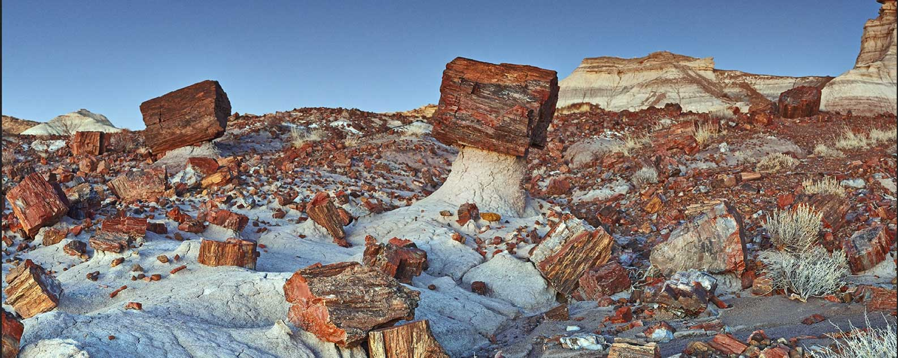

Show Low Arizona
A small town nested in the Arizona white mountains. A beautiful town with the environment the locals called "the high desert". Judging by the sheer size of the town, you may think there is not much to do but you would be wrong. If you love hiking and seeing pre-historic sites, this is the place for you! You will have to do some driving to see these magnificent sites but it is definitely worth it!
Things to see near Show Low
